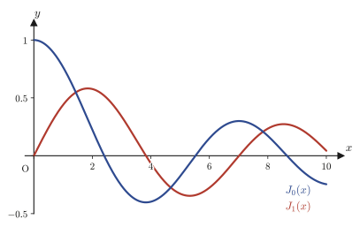
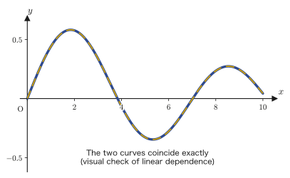
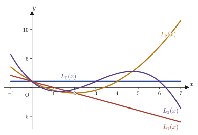

Chapter 41Special Functions — Bessel Functions and Laguerre Polynomials
In the previous chapter (Chapter 40), we applied the Frobenius theory of Chapter 39 (the theory that, when $x=0$ is a regular singular point, the equation has a series solution of the form $y=x^\lambda\sum_{k=0}^{\infty}a_kx^k$) to Legendre's differential equation, and saw that the infinite series terminates only when the degree is a nonnegative integer, which yields polynomial solutions (the Legendre polynomials). In this chapter we apply the same tools to two differential equations that appear throughout engineering, physics, and materials science—Bessel's differential equation and Laguerre's differential equation.
Bessel's differential equation is the equation that invariably appears when Laplace's equation, the wave equation, or the heat equation is solved by separation of variables in cylindrical coordinates. For example, the vibration of a drumhead (a circular disk), the way heat propagates through a cylindrical rod, and the modes of an electromagnetic wave traveling through an optical fiber are all described by solutions of Bessel's differential equation (Bessel functions). When this equation is solved by the method of Chapter 39, then, in contrast to the Legendre case, the series continues infinitely whatever real number the order is, and never becomes a polynomial. Yet this infinite series defines a function that is just as “well-behaved” as the functions $\sin x,\cos x,e^x$ that we use every day (a function that converges for all real numbers $x$). In the first half of this chapter (Sections 41.1–41.3), we build this infinite series by hand, and in the process we acquire a new tool, the gamma function (a generalization of the factorial).
Laguerre's differential equation, which we treat in the second half (Sections 41.4–41.5), appears in the radial part of the Schrödinger equation of the hydrogen atom in quantum mechanics (the part that depends only on the distance $r$ from the nucleus), and for materials science students it is one of the starting points for understanding electron orbitals and chemical bonding. Like Legendre's equation, this equation has polynomial solutions (the Laguerre polynomials) when the parameter $m$ is a nonnegative integer. Going one step further, we also touch on the fact that the “associated Laguerre polynomials” obtained by differentiating this polynomial several times are none other than the radial wave functions of the hydrogen atom.
- The process of applying the Frobenius series method to Bessel's differential equation and deriving the indicial equation, whose roots are $\lambda=\pm\alpha$ (including the reason for taking $a_1=0$)
- The definition of the gamma function $\Gamma(\alpha)=\int_0^\infty x^{\alpha-1}e^{-x}dx$ and its properties $\Gamma(\alpha+1)=\alpha\Gamma(\alpha)$, $\Gamma(n+1)=n!$ (a generalization of the factorial)
- Using the gamma function to derive the series representation of the Bessel function of the first kind $J_\alpha(x)=\displaystyle\sum_{k=0}^{\infty}\frac{(-1)^k}{k!\,\Gamma(\alpha+k+1)}\left(\frac{x}{2}\right)^{2k+\alpha}$, and showing by the ratio test that its radius of convergence is always $\infty$
- The fact that the form of the general solution differs depending on whether the order $\alpha$ is a non-integer or an integer $n$, and the proof that for integer order $J_{-n}(x)=(-1)^nJ_n(x)$ (linear dependence)
- How to use reduction of order to construct, for integer order, another independent fundamental solution $Y_n(x)$ (the Bessel function of the second kind)
- Applying the Frobenius series method to Laguerre's differential equation, and the proof that the indicial equation has the repeated root $\lambda=0$ and that, when $m$ is a nonnegative integer, the series stops after finitely many terms and becomes a polynomial solution (the Laguerre polynomial $L_m(x)$)
- (Advanced) How to derive the associated Laguerre differential equation by differentiating Laguerre's differential equation $N$ times (mathematical induction), Rodrigues's formula, and the series representation of the associated Laguerre polynomial $L_m^N(x)$
Source notes: Yasuhide Mochizuki, Mathematics Notes: Ordinary Differential Equations, pp. 66–72.
41.1 Bessel's Differential Equation and Its Frobenius Series Solutions
Fix a real parameter (the order) $\alpha$ (we often take $\alpha\ge0$, but the argument below holds for any real number $\alpha$), and consider the following second-order linear differential equation.
$$ x^2\frac{d^2y}{dx^2}+x\frac{dy}{dx}+(x^2-\alpha^2)y=0 \tag{41.1}\label{eq:41-bessel-ode} $$This is called Bessel's differential equation. It is an equation that the 19th-century mathematician Friedrich Bessel studied in his work on celestial mechanics, and its solutions are called Bessel functions. In the “Application” box at the end of Section 41.3, we will touch on, all in one place, the situations in which this equation actually arises.
41.1.1 Verifying that $x=0$ is a regular singular point
We divide Eq. \eqref{eq:41-bessel-ode} by the coefficient of the highest-order derivative ($x^2$) to put it in standard form. Assuming $x\neq0$ and dividing both sides by $x^2$, we obtain
$$ \frac{d^2y}{dx^2}+\frac{1}{x}\frac{dy}{dx}+\left(1-\frac{\alpha^2}{x^2}\right)y=0 $$When a second-order linear differential equation is written in the general form $y''+P(x)y'+Q(x)y=0$, here we have
$$ P(x)=\frac1x,\qquad Q(x)=1-\frac{\alpha^2}{x^2} $$The functions $P(x),Q(x)$ both have a denominator that becomes $0$ at $x=0$ and so are undefined there; hence $x=0$ is a singular point of this equation. However, as we learned in Chapter 39, if both $xP(x)$ and $x^2Q(x)$ can be expanded in Taylor series at $x=0$ (that is, are analytic functions there), then $x=0$ is called a regular singular point, and the Frobenius series method can be used. Computing them explicitly, we find
$$ xP(x)=x\cdot\frac1x=1=\underset{a_0}{(1)}+0\cdot x+0\cdot x^2+\cdots,\qquad x^2Q(x)=x^2-\alpha^2=\underset{b_0}{(-\alpha^2)}+0\cdot x+1\cdot x^2+0\cdot x^3+\cdots \tag{41.2}\label{eq:41-bessel-pq} $$Thus both of them (being polynomials to begin with) can obviously be expanded in Taylor series at $x=0$. Therefore $x=0$ is a regular singular point, and Bessel's differential equation has solutions given by series of the form
$$ y=x^\lambda\sum_{k=0}^{\infty}a_kx^k=\sum_{k=0}^{\infty}a_kx^{k+\lambda}\qquad(a_0\neq0) \tag{41.3}\label{eq:41-frobenius-ansatz} $$At least one such series solution exists.
Math Note: The general form of the indicial equation (review of Chapter 39)
When Eq. \eqref{eq:41-frobenius-ansatz} is substituted into an equation with a regular singular point, the coefficient of the lowest-degree term in $x$ (the term with $k=0$) always gives the equation
$$ \lambda^2+(a_0-1)\lambda+b_0=0 $$which is a quadratic equation (the indicial equation), where $a_0=\lim_{x\to0}xP(x)$ and $b_0=\lim_{x\to0}x^2Q(x)$ (a theorem of Chapter 39). The roots $\lambda$ of this quadratic equation determine the first exponent of the series solution (the $\lambda$ in $x^\lambda$). This plays exactly the same role as the characteristic equation $a\lambda^2+b\lambda+c=0$ that we derived for constant-coefficient second-order linear equations (Chapter 35) by taking $y=e^{\lambda x}$ as the fundamental solution (an algebraic equation that determines the exponent $\lambda$ of the series or fundamental solution)—except that the indicial equation has a form peculiar to Frobenius series, and its coefficients are determined by the behavior of $P(x),Q(x)$ at $x=0$ (namely $a_0,b_0$), unlike the coefficients $a,b$ in the constant-coefficient case.
By Eq. \eqref{eq:41-bessel-pq}, $a_0=1$ and $b_0=-\alpha^2$, so the indicial equation of Bessel's differential equation is
$$ \lambda^2+(1-1)\lambda+(-\alpha^2)=\lambda^2-\alpha^2=0 $$which has the two roots $\lambda=\pm\alpha$. Below, we will check this on our own by substituting the series directly, and we will go on to find the relations among the coefficients $a_k$ (the recurrence relation).
41.1.2 Substituting the series and comparing coefficients
Differentiating Eq. \eqref{eq:41-frobenius-ansatz} term by term, we obtain
$$ \frac{dy}{dx}=\sum_{k=0}^{\infty}(k+\lambda)a_kx^{k+\lambda-1},\qquad \frac{d^2y}{dx^2}=\sum_{k=0}^{\infty}(k+\lambda)(k+\lambda-1)a_kx^{k+\lambda-2} $$(we may use the differentiation formula for power functions, $(x^n)'=nx^{n-1}$, just as it stands even when the exponent $k+\lambda$ is not necessarily an integer—this is an application of the fact that the differentiation formula for power functions that you learned in high school also holds for real exponents). Substituting these into each term of Eq. \eqref{eq:41-bessel-ode}, we get
$$ x^2\cdot\frac{d^2y}{dx^2}=\sum_{k=0}^{\infty}(k+\lambda)(k+\lambda-1)a_kx^{k+\lambda},\qquad x\cdot\frac{dy}{dx}=\sum_{k=0}^{\infty}(k+\lambda)a_kx^{k+\lambda} $$(note that we multiplied $x^{k+\lambda-2}$ and $x^{k+\lambda-1}$ by $x^2$ and $x$, respectively, so the exponents are aligned and both become $x^{k+\lambda}$). Also, $x^2y=\sum a_kx^{k+\lambda+2}$ and $-\alpha^2y=-\alpha^2\sum a_kx^{k+\lambda}$. Adding all of these and setting the total $=0$, we obtain
$$ \sum_{k=0}^{\infty}\Big\{(k+\lambda)(k+\lambda-1)+(k+\lambda)-\alpha^2\Big\}a_kx^{k+\lambda}+\sum_{k=0}^{\infty}a_kx^{k+\lambda+2}=0 $$Here we simplify the expression inside the braces. Since $(k+\lambda)(k+\lambda-1)+(k+\lambda)=(k+\lambda)\big\{(k+\lambda-1)+1\big\}=(k+\lambda)^2$ (we factored out $(k+\lambda)$), we have
$$ \sum_{k=0}^{\infty}\big\{(k+\lambda)^2-\alpha^2\big\}a_kx^{k+\lambda}+\sum_{k=0}^{\infty}a_kx^{k+\lambda+2}=0 \tag{41.4}\label{eq:41-bessel-two-sums} $$We have thus obtained an equation stating that the sum of the two series is always $0$.
Intuition: Aligning the exponents of the two series (reindexing the summation)
In Eq. \eqref{eq:41-bessel-two-sums}, the left series has the sequence of exponents $x^\lambda,x^{\lambda+1},x^{\lambda+2},\dots$, while the right series, because of the extra factor $x^2$, has the sequence of exponents $x^{\lambda+2},x^{\lambda+3},x^{\lambda+4},\dots$. To combine the two series into one and extract the condition “the coefficient of every $x^{k+\lambda}$ is $0$,” we need to write both series with the same symbol for the exponent. So, for the right series only, we change the summation index from $k$ to $j=k+2$ (we have $k=j-2$, and when $k=0,1,2,\dots$ we have $j=2,3,4,\dots$). Then
$$ \sum_{k=0}^{\infty}a_kx^{k+\lambda+2}=\sum_{j=2}^{\infty}a_{j-2}x^{j+\lambda} $$Since the summation index $j$ is just a “counting letter,” we may rename it $k$ again ($\sum_{j=2}^{\infty}a_{j-2}x^{j+\lambda}=\sum_{k=2}^{\infty}a_{k-2}x^{k+\lambda}$). Now the right series too has been aligned in the form “$x^{k+\lambda}$.”
Using this reindexing, we can split the left series of Eq. \eqref{eq:41-bessel-two-sums} into the terms with $k=0,1$ and the terms with $k\ge2$, and rewrite the equation as
$$ (\lambda^2-\alpha^2)a_0x^{\lambda}+\big\{(\lambda+1)^2-\alpha^2\big\}a_1x^{\lambda+1} +\sum_{k=2}^{\infty}\Big[\big\{(k+\lambda)^2-\alpha^2\big\}a_k+a_{k-2}\Big]x^{k+\lambda}=0 $$(nothing is added from the right series to the terms with $k=0,1$—because the right series starts only from $k\ge2$). Since this is an identity that holds for all $x$, the coefficient of each of $x^\lambda,x^{\lambda+1},x^{\lambda+2},\dots$ must be $0$. That is, we obtain
$$ (\lambda^2-\alpha^2)a_0=0,\qquad \big\{(\lambda+1)^2-\alpha^2\big\}a_1=0,\qquad \big\{(k+\lambda)^2-\alpha^2\big\}a_k+a_{k-2}=0\ \ (k\ge2) $$In the last relation, we shift the summation index by $k\to k+2$ (that is, since from now on we want to use the relation in the direction of “producing $a_{k+2}$ from $a_k$,” we read $k\ge2$ as $k\ge0$ and $a_k$ as $a_{k+2}$), and then we obtain the same notation as in the original notes:
$$ (\lambda^2-\alpha^2)a_0=0,\qquad \big\{(\lambda+1)^2-\alpha^2\big\}a_1=0,\qquad \big\{(k+\lambda+2)^2-\alpha^2\big\}a_{k+2}+a_k=0\ \ (k=0,1,2,\dots) \tag{41.5}\label{eq:41-bessel-recurrence} $$(For the rightmost equation, it is convenient in the computations of Section 41.2 to remember also that we can factor $(k+\lambda+2)^2-\alpha^2=(k+\lambda+2-\alpha)(k+\lambda+2+\alpha)$.)
41.1.3 The indicial equation and the reason for $a_1=0$
Since $a_0\neq0$ (a premise of Frobenius series), the first equation of Eq. \eqref{eq:41-bessel-recurrence} gives $\lambda^2-\alpha^2=0$, that is,
$$ \lambda=\pm\alpha $$(let us confirm that this agrees with the result obtained from the general form of the indicial equation in Section 41.1.1). Next, we consider $a_1$. If $a_1\neq0$, then the second equation of Eq. \eqref{eq:41-bessel-recurrence} requires that $(\lambda+1)^2-\alpha^2=0$. Examining the case $\lambda=\alpha$ and the case $\lambda=-\alpha$, we find
$$ \lambda=\alpha:\ (\alpha+1)^2-\alpha^2=2\alpha+1=0\ \Longrightarrow\ \alpha=-\frac12,\qquad \lambda=-\alpha:\ (1-\alpha)^2-\alpha^2=1-2\alpha=0\ \Longrightarrow\ \alpha=\frac12 $$In other words, “$a_1\neq0$” is allowed only in the very special case $\alpha=\pm1/2$.
Caution: Why may we take $a_1=0$?
What we want is a way of constructing series solutions that works for any real number $\alpha$. If we keep in the equations a special term that can be used only for $\alpha=\pm1/2$ (the term $a_1x^{\lambda+1}$), then for general $\alpha$ the second equation of Eq. \eqref{eq:41-bessel-recurrence} can be nothing other than “$0\cdot a_1=0$,” and a contradiction results. So, in order to discuss general $\alpha$, we set
$$ a_1=0 $$This is by no means a matter of “throwing away the information for the case $\alpha=\pm1/2$”—the terms of the special series for the case $\alpha=1/2$ will in fact all appear in the other exponent (the solution on the side $\lambda=-\alpha=-1/2$). Since the general solution is built by combining the solution for $\lambda=\alpha$ and the solution for $\lambda=-\alpha$, no information is lost.
If $a_1=0$, then following the recurrence relation $\{(k+\lambda+2)^2-\alpha^2\}a_{k+2}=-a_k$ ($k=0,1,2,\dots$) starting from $k=1$, we get $a_1=0\Rightarrow a_3=0\Rightarrow a_5=0\Rightarrow\cdots$, so that
$$ a_1=a_3=a_5=\cdots=0 $$Therefore, the only coefficients that remain different from $0$ are the even-indexed coefficients $a_0,a_2,a_4,\dots$, and these are to be found from the recurrence relation
$$ a_{k+2}=\frac{-a_k}{(k+\lambda+2)^2-\alpha^2}\qquad(k=0,2,4,\dots) $$separately for the case $\lambda=\alpha$ and the case $\lambda=-\alpha$. We carry this out in the next section.
Example 41.1: The indicial equation and the coefficients $a_2,a_4$ for $\alpha=2$
For $\alpha=2$, solve the indicial equation of Bessel's differential equation, and express the coefficients $a_2,a_4$ on the side $\lambda=\alpha=2$ in terms of $a_0$.
Solution. From the indicial equation $\lambda^2-\alpha^2=\lambda^2-4=0$ we get $\lambda=\pm2$. We consider the side $\lambda=\alpha=2$. Substituting $\lambda=2,\alpha=2$ into the recurrence relation $\{(k+\lambda+2)^2-\alpha^2\}a_{k+2}=-a_k$, we obtain
$$ \{(k+4)^2-4\}a_{k+2}=-a_k $$For $k=0$: $\{(0+4)^2-4\}a_2=-a_0$, that is, $(16-4)a_2=-a_0$, so that
$$ a_2=-\frac{a_0}{12} $$For $k=2$: $\{(2+4)^2-4\}a_4=-a_2$, that is, $(36-4)a_4=-a_2$, so that
$$ a_4=-\frac{a_2}{32}=-\frac{1}{32}\times\left(-\frac{a_0}{12}\right)=\frac{a_0}{384} $$(Substituting $\alpha=2$ and $n=1,2$ into the general formula $a_{2n}=\dfrac{(-1)^n}{n!\,2^{2n}(\alpha+1)(\alpha+2)\cdots(\alpha+n)}a_0$ that we will derive in Section 41.2 gives $a_2=\dfrac{-1}{1!\cdot4\cdot3}a_0=-\dfrac{a_0}{12}$ and $a_4=\dfrac{1}{2!\cdot16\cdot(3\cdot4)}a_0=\dfrac{a_0}{384}$, which agree with the computation above. Verified with SymPy.)
41.2 The Gamma Function and Bessel Functions of the First Kind
41.2.1 The general term when $\lambda=\alpha$
Substituting $\lambda=\alpha$ into the recurrence relation at the end of Section 41.1, we obtain $(k+\alpha+2)^2-\alpha^2=(k+2)(k+2\alpha+2)=(k+2)\{(k+2)+2\alpha\}$ (this is the factorization $A^2-B^2=(A-B)(A+B)$ with $A=k+\alpha+2,\ B=\alpha$), so the recurrence relation becomes
$$ a_{k+2}=\frac{-a_k}{(k+2)(k+2+2\alpha)} $$Let us substitute $k=0,2,4,\dots$ and actually compute $a_2,a_4,a_6$.
$$ a_2=-\frac{a_0}{2\cdot(2+2\alpha)}=-\frac{1}{2\cdot2(\alpha+1)}a_0 $$(We factored $2+2\alpha=2(\alpha+1)$.) Continuing, substituting $k=2$ gives
$$ a_4=-\frac{a_2}{4\cdot(4+2\alpha)}=-\frac{1}{4\cdot2(\alpha+2)}\times\left\{-\frac{1}{2\cdot2(\alpha+1)}a_0\right\}=\frac{1}{2\cdot4\times2^2(\alpha+1)(\alpha+2)}a_0 $$(We substituted the expression for $a_2$; note that the two minus signs cancel to give $+$.) Next, substituting $k=4$ gives
$$ a_6=-\frac{a_4}{6\cdot(6+2\alpha)}=-\frac{1}{6\cdot2(\alpha+3)}\times\frac{1}{2\cdot4\times2^2(\alpha+1)(\alpha+2)}a_0=-\frac{1}{2\cdot4\cdot6\times2^3(\alpha+1)(\alpha+2)(\alpha+3)}a_0 $$Now we have three formulas in a row. Looking closely at the structure of the denominator, we see that $2\cdot4\cdot6\cdots(2n)=2^n\cdot n!$ (pulling out $n$ factors of $2$ leaves $1\cdot2\cdot3\cdots n=n!$), that the sign flips at every step, giving $(-1)^n$, and that the part $(\alpha+1)(\alpha+2)\cdots(\alpha+n)$ gains one more factor at every step. Therefore, if we repeat this computation in the same way for $n$ steps (this can be justified by mathematical induction, in the form “if the claim holds for $a_{2(n-1)}$, then using the recurrence relation once shows that it holds for $a_{2n}$ as well”), we obtain the general term
$$ a_{2n}=\frac{(-1)^n}{2\cdot4\cdot6\cdots(2n)\times2^n(\alpha+1)(\alpha+2)\cdots(\alpha+n)}a_0 =\frac{(-1)^n}{n!\cdot2^{2n}(\alpha+1)(\alpha+2)\cdots(\alpha+n)}a_0 \tag{41.6}\label{eq:41-a2n-elementary} $$(we used $2\cdot4\cdots(2n)\times2^n=2^n n!\times2^n=2^{2n}n!$). The function
$$ y_1=\sum_{k=0}^{\infty}a_{2k}x^{2k+\alpha} $$is one solution of Bessel's differential equation (the one for $\lambda=\alpha$).
41.2.2 The gamma function
The denominator of Eq. \eqref{eq:41-a2n-elementary} contains the “product of consecutive numbers” $(\alpha+1)(\alpha+2)\cdots(\alpha+n)$. When $\alpha$ is an integer, this looks as if it could be written as part of a factorial, but when $\alpha$ is a general real number that is not an integer, the factorial symbol $n!$ cannot be used as it stands. So let us introduce a tool that extends the factorial to real numbers (and even to complex numbers).
Definition 41.1: Gamma function
For $\alpha\gt0$, define
$$ \Gamma(\alpha)\overset{\text{def}}{=}\int_0^{\infty}x^{\alpha-1}e^{-x}\,dx \tag{41.7}\label{eq:41-gamma-def} $$(this integral is called the gamma function).
Caution: This integral really does exist
The interval of integration of Eq. \eqref{eq:41-gamma-def} extends infinitely, as $[0,\infty)$, and in addition, when $\alpha\lt1$ the integrand $x^{\alpha-1}e^{-x}$ diverges as $x\to+0$. In other words, this integral combines the improper integral (Section 5.4) and the improper integral over an infinite interval, both of which we studied in Chapter 5. As $x\to\infty$, $e^{-x}$ approaches $0$ much faster than $x^{\alpha-1}$, so the integral converges there, and the improper integral as $x\to+0$ also converges as long as $\alpha\gt0$ (we do not go into a detailed proof of convergence, but intuitively it means that “the rapid decay of $e^{-x}$ exponentially overwhelms the growth of the power function”).
The most important property of the gamma function is the following recurrence relation.
Theorem 41.1: Recurrence relation of the gamma function
$$ \Gamma(\alpha+1)=\alpha\,\Gamma(\alpha)\qquad(\alpha\gt0),\qquad\qquad \Gamma(1)=1 $$Proof
$\Gamma(1)=\displaystyle\int_0^\infty x^0e^{-x}dx=\int_0^\infty e^{-x}dx=\big[-e^{-x}\big]_0^\infty=0-(-1)=1$ (both the improper integral and the improper integral over an infinite interval can be computed simply by attaching a limit to an indefinite integral of the kind covered in high school mathematics).
For $\Gamma(\alpha+1)$, we write it out as in the definition and perform integration by parts (we use the integration formula $\int u'v\,dx=uv-\int uv'\,dx$, already learned in high school, with $u'=e^{-x}$ (→ $u=-e^{-x}$) and $v=x^\alpha$ (→ $v'=\alpha x^{\alpha-1}$)).
$$ \Gamma(\alpha+1)=\int_0^\infty x^\alpha e^{-x}dx =\Big[-x^\alpha e^{-x}\Big]_0^\infty-\int_0^\infty\big(-e^{-x}\big)\cdot\alpha x^{\alpha-1}dx $$As for the first term on the right-hand side, $x^\alpha e^{-x}\to0$ as $x\to\infty$ (because the decay of $e^{-x}$ beats the growth of any power function), and at $x=0$ as well we have $0^\alpha e^0=0$ when $\alpha\gt0$, so $\big[-x^\alpha e^{-x}\big]_0^\infty=0-0=0$. Therefore we obtain
$$ \Gamma(\alpha+1)=\alpha\int_0^\infty x^{\alpha-1}e^{-x}dx=\alpha\,\Gamma(\alpha) $$∎
Using this recurrence relation repeatedly, we obtain $\Gamma(n+1)=n\,\Gamma(n)=n(n-1)\Gamma(n-1)=\cdots=n(n-1)\cdots1\cdot\Gamma(1)=n!$ (when $n$ is a positive integer). That is, we have
$$ \Gamma(n+1)=n!\qquad(n=0,1,2,\dots) $$Thus the gamma function is an extension of the factorial $n!$ even to “non-integer real numbers”—this is the very motivation for introducing $\Gamma$.
Example 41.2: Checking that $\Gamma(5)=4!$
Using the recurrence relation of Theorem 41.1 repeatedly, verify that $\Gamma(5)=4!$.
Solution. $\Gamma(5)=\Gamma(4+1)=4\,\Gamma(4)=4\times3\,\Gamma(3)=4\times3\times2\,\Gamma(2)=4\times3\times2\times1\,\Gamma(1)=4!\times1=24$. On the other hand, $4!=4\times3\times2\times1=24$, so indeed $\Gamma(5)=4!=24$ (verified with SymPy: $\Gamma(5)=24$).
If we use the same recurrence relation repeatedly, the “product of consecutive numbers” $(\alpha+1)(\alpha+2)\cdots(\alpha+n)$ can also be written compactly in terms of the gamma function. Applying the recurrence relation $\Gamma(z+1)=z\Gamma(z)$ a total of $n$ times, taking $z=\alpha+n,\alpha+n-1,\dots,\alpha+1$ in this order, we get
$$ \Gamma(\alpha+n+1)=(\alpha+n)\Gamma(\alpha+n)=(\alpha+n)(\alpha+n-1)\Gamma(\alpha+n-1)=\cdots=(\alpha+n)(\alpha+n-1)\cdots(\alpha+1)\,\Gamma(\alpha+1) $$That is, we obtain the relation
$$ (\alpha+1)(\alpha+2)\cdots(\alpha+n)=\frac{\Gamma(\alpha+n+1)}{\Gamma(\alpha+1)} \tag{41.8}\label{eq:41-gamma-product} $$Using this, let us simplify Eq. \eqref{eq:41-a2n-elementary}.
41.2.3 Series representation of the Bessel function of the first kind
It may seem to come out of nowhere, but in Eq. \eqref{eq:41-a2n-elementary} we choose $a_0$ using the gamma function, as follows.
$$ a_0=\frac{1}{2^\alpha\,\Gamma(\alpha+1)} $$(The reason for choosing it this way is that, when we substitute it, the final formula becomes the simplest—this is exactly the same idea as in Chapter 40, where we chose the normalization constant of the Legendre polynomials “so that, looking back afterwards, it takes the best form.”) Substituting this into Eq. \eqref{eq:41-a2n-elementary} gives
$$ a_{2k}x^{2k+\alpha}=\frac{(-1)^k}{2^{2k}\,k!\,(\alpha+1)(\alpha+2)\cdots(\alpha+k)}\times\frac{1}{2^\alpha\,\Gamma(\alpha+1)}\,x^{2k+\alpha} $$Here, using Eq. \eqref{eq:41-gamma-product} (the case $n=k$), we have $(\alpha+1)(\alpha+2)\cdots(\alpha+k)\,\Gamma(\alpha+1)=\Gamma(\alpha+k+1)$, and moreover $k!=\Gamma(k+1)$ (a corollary of Theorem 41.1), so the denominator can be combined as
$$ \underset{=\,\Gamma(k+1)}{k!}\times\underset{=\,\Gamma(\alpha+k+1)}{(\alpha+1)(\alpha+2)\cdots(\alpha+k)\,\Gamma(\alpha+1)}=\Gamma(k+1)\,\Gamma(\alpha+k+1) $$Also, since $2^{2k}\times2^\alpha=2^{2k+\alpha}$, we have
$$ a_{2k}x^{2k+\alpha}=\frac{(-1)^k}{\Gamma(k+1)\,\Gamma(\alpha+k+1)}\cdot\frac{x^{2k+\alpha}}{2^{2k+\alpha}}=\frac{(-1)^k}{k!\,\Gamma(\alpha+k+1)}\left(\frac{x}{2}\right)^{2k+\alpha} $$(We went back to $\Gamma(k+1)=k!$, and we combined $x^{2k+\alpha}/2^{2k+\alpha}=(x/2)^{2k+\alpha}$.) Therefore we obtain the following very clear series representation:
$$ y_1=\sum_{k=0}^{\infty}\frac{(-1)^k}{k!\,\Gamma(\alpha+k+1)}\left(\frac{x}{2}\right)^{2k+\alpha} \tag{41.9}\label{eq:41-y1-series} $$In Section 41.3, we will give this $y_1$ its official name ($J_\alpha(x)$).
41.2.4 The solution when $\lambda=-\alpha$
Let us find the solution $y_2$ corresponding to the other root $\lambda=-\alpha$ of the indicial equation. Substituting $\lambda=-\alpha$ into the recurrence relation $\{(k+\lambda+2)^2-\alpha^2\}a_{k+2}+a_k=0$ of Section 41.1.2 gives $\{(k-\alpha+2)^2-\alpha^2\}a_{k+2}+a_k=0$.
Intuition: Why is it enough to “just replace $\alpha$ by $-\alpha$”?
Let us compare the denominator $(k+\alpha+2)^2-\alpha^2$ of the recurrence relation for the case $\lambda=\alpha$ with the one we have just obtained. If we replace $\alpha\to-\alpha$, it becomes $(k-\alpha+2)^2-(-\alpha)^2=(k-\alpha+2)^2-\alpha^2$, which coincides exactly with the denominator of the recurrence relation for the case $\lambda=-\alpha$ (the key point is that the value of $\alpha^2$ does not change under $\alpha\to-\alpha$). Also, the defining formula of $a_0$, $a_0=1/(2^\alpha\Gamma(\alpha+1))$, becomes $1/(2^{-\alpha}\Gamma(-\alpha+1))$ if we replace $\alpha\to-\alpha$. In other words, since the whole computation of Sections 41.2.1–41.2.3 involves only the letter $\alpha$ (we did not use an independent letter $\lambda$), replacing every $\alpha$ in the result for the case $\lambda=\alpha$ by $-\alpha$ gives, just as it stands, the result for the case $\lambda=-\alpha$.
Therefore, simply replacing $\alpha$ by $-\alpha$ in Eq. \eqref{eq:41-y1-series}, we obtain
$$ y_2=\sum_{k=0}^{\infty}\frac{(-1)^k}{k!\,\Gamma(-\alpha+k+1)}\left(\frac{x}{2}\right)^{2k-\alpha} \tag{41.10}\label{eq:41-y2-series} $$In the next section, we will define these $y_1,y_2$ as official special functions and fix the form of the general solution.
41.3 The General Solution of Bessel's Differential Equation
41.3.1 Definition of the Bessel function of the first kind
Let us give official names to the two series solutions $y_1$ (Eq. \eqref{eq:41-y1-series}) and $y_2$ (Eq. \eqref{eq:41-y2-series}) obtained in Section 41.2.
Definition 41.2: Bessel function of the first kind
For a real number $\alpha$ ($-\infty\lt\alpha\lt\infty$), define
$$ J_\alpha(x)\overset{\text{def}}{=}\sum_{k=0}^{\infty}\frac{(-1)^k}{k!\,\Gamma(\alpha+k+1)}\left(\frac{x}{2}\right)^{2k+\alpha} \tag{41.11}\label{eq:41-jalpha-def} $$and call it the Bessel function of the first kind of order $\alpha$ (the number $\alpha$ is its order). That is, $y_1=J_\alpha(x)$ and $y_2=J_{-\alpha}(x)$ (Eq. \eqref{eq:41-y2-series} is what one obtains from the defining expression of $J_\alpha(x)$ by replacing $\alpha$ with $-\alpha$), and $J_\alpha(x)$ is one of the fundamental solutions of Bessel's differential equation \eqref{eq:41-bessel-ode}.
The reason we went out of our way to write “one of the fundamental solutions” is that this alone is not yet a “general solution” (a linear combination of two independent fundamental solutions). The form of the general solution changes greatly depending on whether the order $\alpha$ is an integer—we investigate this in detail in Sections 41.3.3 and 41.3.4. Before that, let us first check, in simple cases, what kind of function the series of Definition 41.2 actually is.
Example 41.3: Expressing $J_{1/2}(x)$ in terms of elementary functions
Show that when $\alpha=\dfrac12$, $J_{1/2}(x)=\sqrt{\dfrac{2}{\pi x}}\,\sin x$.
Solution. Substituting $\alpha=1/2$ into Definition 41.2, we obtain
$$ J_{1/2}(x)=\sum_{k=0}^{\infty}\frac{(-1)^k}{k!\,\Gamma\!\left(k+\dfrac32\right)}\left(\frac{x}{2}\right)^{2k+1/2} $$First we put the denominator factor $\Gamma(k+3/2)$ into closed form, starting from $\Gamma(1/2)=\sqrt\pi$ (as already mentioned in the prerequisites at the beginning of this chapter, this value follows from the computation of the Gaussian integral in Chapter 7). Applying the recurrence relation $\Gamma(z+1)=z\Gamma(z)$ of Theorem 41.1 to $\Gamma(1/2)$ repeatedly, $k+1$ times, we get
$$ \Gamma\!\left(k+\frac32\right)=\left(k+\frac12\right)\left(k-\frac12\right)\cdots\frac32\cdot\frac12\cdot\Gamma\!\left(\frac12\right) =\sqrt\pi\cdot\frac{1\cdot3\cdot5\cdots(2k+1)}{2^{k+1}} $$(if we factor the denominator $2$ out of each of the $k+1$ factors $\frac12,\frac32,\dots,k+\frac12$, the numerator is left with the $k+1$ odd numbers $1,3,5,\dots,2k+1$). The “product of odd numbers only” in the numerator, $1\cdot3\cdot5\cdots(2k+1)$, equals $(2k+1)!=1\cdot2\cdot3\cdots(2k+1)$ divided by the product of the even numbers $2\cdot4\cdots(2k)=2^kk!$, so
$$ 1\cdot3\cdot5\cdots(2k+1)=\frac{(2k+1)!}{2^kk!} $$Substituting this, we get
$$ \Gamma\!\left(k+\frac32\right)=\sqrt\pi\cdot\frac{(2k+1)!}{2^kk!\cdot2^{k+1}}=\frac{(2k+1)!}{4^kk!}\cdot\frac{\sqrt\pi}{2} \tag{41.12}\label{eq:41-gamma-half-integer} $$We thus obtain this closed form (substituting numerical values for $k=0,1,2,3$ gives $\Gamma(3/2)=\sqrt\pi/2$, $\Gamma(5/2)=3\sqrt\pi/4$, $\Gamma(7/2)=15\sqrt\pi/8$, and $\Gamma(9/2)=105\sqrt\pi/16$, verified with SymPy). Substituting it into the series for $J_{1/2}(x)$, we obtain
$$ \frac{1}{k!\,\Gamma(k+3/2)}=\frac{1}{k!}\cdot\frac{4^kk!}{(2k+1)!}\cdot\frac{2}{\sqrt\pi}=\frac{2\cdot4^k}{(2k+1)!\sqrt\pi} $$(the two factors $k!$ cancel each other). Therefore
$$ J_{1/2}(x)=\sum_{k=0}^{\infty}(-1)^k\cdot\frac{2\cdot4^k}{(2k+1)!\sqrt\pi}\cdot\frac{x^{2k+1/2}}{2^{2k+1/2}} $$Here, since $4^k=2^{2k}$, we have $\dfrac{4^k}{2^{2k+1/2}}=\dfrac{1}{2^{1/2}}=\dfrac{1}{\sqrt2}$, and since $\dfrac{2}{\sqrt2}=\sqrt2$,
$$ J_{1/2}(x)=\sqrt{\frac{2}{\pi}}\cdot x^{1/2}\sum_{k=0}^{\infty}\frac{(-1)^k}{(2k+1)!}x^{2k} =\sqrt{\frac{2}{\pi}}\cdot\frac{1}{\sqrt x}\sum_{k=0}^{\infty}\frac{(-1)^k}{(2k+1)!}x^{2k+1} $$(in the last equality we wrote $x^{1/2}=x/\sqrt x$ and matched the exponent inside the sum to $2k+1$). Now the sum $\displaystyle\sum_{k=0}^{\infty}\dfrac{(-1)^k}{(2k+1)!}x^{2k+1}=x-\dfrac{x^3}{3!}+\dfrac{x^5}{5!}-\cdots$ is precisely the Maclaurin expansion of $\sin x$ itself (already covered in Chapter 4). Hence
$$ J_{1/2}(x)=\sqrt{\frac{2}{\pi}}\cdot\frac{\sin x}{\sqrt x}=\sqrt{\frac{2}{\pi x}}\,\sin x $$(we verified with SymPy that the two sides agree when the series is expanded up to the sixth term, and that the numerical value at $x=2.3456$ (the series summed over 40 terms) agrees with $\sqrt{2/(\pi x)}\sin x$ to the eighth decimal place). Thus, Bessel functions of half-integer order are known to be expressible by elementary functions (trigonometric functions)—these are called spherical Bessel functions, and they will play an important role later in electromagnetism and quantum mechanics (wave equations under spherically symmetric potentials).
41.3.2 Radius of convergence — why can the series be used for all real numbers?
Does the series \eqref{eq:41-jalpha-def} really make sense (converge) for every real number $x$? We apply the ratio test learned in high school (the test stating that if $\left|\dfrac{c_{n+1}}{c_n}\right|\to r$, then the series $\sum c_n$ converges when $r\lt1$ and diverges when $r\gt1$) to the ratio of the absolute values of the coefficients. Using $a_{2n}$ of Eq. \eqref{eq:41-a2n-elementary} ($a_0$ chosen to match the normalization of Eq. \eqref{eq:41-jalpha-def}, that is, the denominator part of $a_{2n}=\dfrac{(-1)^n}{n!\,\Gamma(\alpha+n+1)}\cdot\dfrac{1}{2^{2n+\alpha}}$), we compute the ratio of adjacent even-indexed terms:
$$ \left|\frac{a_{2n}}{a_{2n+2}}\right| =\left|\frac{(n+1)!\,\Gamma(\alpha+n+2)}{n!\,\Gamma(\alpha+n+1)}\right| $$Here $\dfrac{(n+1)!}{n!}=n+1$ (this is just the definition of the factorial), and $\dfrac{\Gamma(\alpha+n+2)}{\Gamma(\alpha+n+1)}=\alpha+n+1$ (we used the recurrence relation $\Gamma(z+1)=z\Gamma(z)$ of Theorem 41.1 with $z=\alpha+n+1$), so
$$ R^2=\lim_{n\to\infty}\left|\frac{a_{2n}}{a_{2n+2}}\right|=\lim_{n\to\infty}(n+1)(\alpha+n+1)=\infty \tag{41.13}\label{eq:41-convergence-radius} $$(as $n\to\infty$, $(n+1)(\alpha+n+1)$ grows without bound, of order $n^2$). Hence the radius of convergence is $R=\infty$; that is, the series \eqref{eq:41-jalpha-def} converges absolutely for every real number $x$. This is exactly the same property as that of the Maclaurin series of the familiar $\sin x,\cos x,e^x$, which converge for all real numbers, and it is also consistent with the general theory of the power series method in Chapter 39 (a Frobenius series about a regular singular point always converges up to the next singular point, where $P(x),Q(x)$ of the original equation “misbehave”)—the only singular point of Bessel's differential equation \eqref{eq:41-bessel-ode} is $x=0$, and since there is no singular point other than $x=0$, it is natural that the series converges for all complex numbers except $x=0$ (and hence for all real numbers).

41.3.3 When the order is not an integer: the general solution
In the next theorem we use the symbol $\in$ (“belongs to,” “is an element of”). $\alpha\in\mathbb{Z}$ means “$\alpha$ belongs to the set $\mathbb{Z}$ of integers,” that is, “$\alpha$ is an integer.” The symbol for its negation is $\notin$ (“does not belong to”), and $\alpha\notin\mathbb{Z}$ means “$\alpha$ is not an integer.”
Theorem 41.2: The general solution of Bessel's differential equation
The general solution of Bessel's differential equation \eqref{eq:41-bessel-ode} is as follows, depending on whether the order $\alpha$ is an integer.
(I) If $\alpha\notin\mathbb{Z}$ (not an integer), then
$$ y=C_1J_\alpha(x)+C_2J_{-\alpha}(x) $$(II) If $\alpha\in\mathbb{Z}$ (an integer), letting $\alpha=n$, we have
$$ y=C_1J_n(x)+C_2Y_n(x) $$Here $Y_n(x)$ is a function called the Bessel function of the second kind of order $n$, which we construct in Section 41.3.5. ($C_1,C_2$ are arbitrary constants.)
Caution: Why is a case split necessary?
In case (I), $J_\alpha(x)$ and $J_{-\alpha}(x)$ are linearly independent (neither can be expressed as a constant multiple of the other), so combining these two as they are gives the general solution. In case (II), however—that is, when the order is an integer $n$—$J_n(x)$ and $J_{-n}(x)$ become linearly dependent—placing side by side two functions that are merely constant multiples of the same function does not give the “two independent fundamental solutions” required for a second-order linear differential equation. Therefore, only for integer order, we have to go to the trouble of finding, in place of $J_{-n}(x)$, another function $Y_n(x)$ that is independent of $J_n(x)$. Below, we prove in Section 41.3.4 that they “become linearly dependent,” and in Section 41.3.5 we actually construct $Y_n(x)$ as the replacement.
First let us verify case (I), that is, the case where $\alpha$ is not an integer. As $x\to+0$, if we extract only the leading term (the $k=0$ term) of the series in Definition 41.2, we get
$$ J_\alpha(x)\sim\frac{1}{\Gamma(\alpha+1)}\left(\frac{x}{2}\right)^{\alpha},\qquad J_{-\alpha}(x)\sim\frac{1}{\Gamma(-\alpha+1)}\left(\frac{x}{2}\right)^{-\alpha} \qquad(x\to+0) $$(compared with the $k=0$ term, the terms with $k\ge1$ are smaller by factors of $x^2,x^4,\dots$, so they can be ignored as $x\to+0$—this is called the “leading term (asymptotic form) as $x\to+0$”). Suppose that a relation $J_\alpha(x)=cJ_{-\alpha}(x)$ (for some real number $c$) held for all $x\gt0$. Then, comparing the leading terms of both sides as $x\to+0$, the coefficient of $x^\alpha$ and the coefficient of $x^{-\alpha}$ (multiplied by $c$) would have to agree. But since $\alpha$ is not an integer (in particular $\alpha\neq0$), $x^\alpha\to0$ and $x^{-\alpha}\to\infty$ (or the reverse) show completely different behavior as $x\to+0$, so as long as neither leading term is identically $0$, they cannot agree as constant multiples (if they did agree, we would have $\alpha=-\alpha$, that is, $\alpha=0$, contradicting the assumption that $\alpha$ is not an integer). Hence $J_\alpha(x)$ cannot be expressed as a real multiple of $J_{-\alpha}(x)$; that is, the two are linearly independent. Therefore, when $\alpha\notin\mathbb{Z}$, the general solution is
$$ y=C_1J_\alpha(x)+C_2J_{-\alpha}(x) $$as claimed.
41.3.4 When the order is an integer: linear dependence $J_{-n}(x)=(-1)^nJ_n(x)$
Next we examine the case where $\alpha$ is an integer. Let $\alpha=n$ ($n=0,1,2,\dots$). Then $\Gamma(n+k+1)=(n+k)!$ (since $n+k$ is a nonnegative integer, this is the corollary to Theorem 41.1), so the series in Definition 41.2 takes the form
$$ J_n(x)=\sum_{k=0}^{\infty}\frac{(-1)^k}{k!\,\Gamma(n+k+1)}\left(\frac{x}{2}\right)^{2k+n} =\sum_{k=0}^{\infty}\frac{(-1)^k}{k!\,(n+k)!}\left(\frac{x}{2}\right)^{2k+n} \tag{41.14}\label{eq:41-jn-series} $$which can be written using only factorials. On the other hand, for $J_{-n}(x)$, substituting $\alpha=-n$ into Definition 41.2 gives
$$ J_{-n}(x)=\sum_{k=0}^{\infty}\frac{(-1)^k}{k!\,\Gamma(-n+k+1)}\left(\frac{x}{2}\right)^{2k-n} $$but care is needed here. For $k=0,1,\dots,n-1$ we have $-n+k+1\le0$, so $\Gamma(-n+k+1)$ is the gamma function at an integer less than or equal to $0$—that is, at a value that we have not defined. Naively, we reason that “$(-n+k)!$ is meaningless because what is inside the factorial is a negative integer,” and regard all of these terms as $0$ (we handle this point by taking the sum only over $k\ge n$).
Intuition: Why do the “negative factorial” terms vanish?
To put it a little more precisely, the background is the fact that the reciprocal of the gamma function, $1/\Gamma(z)$, takes exactly the value $0$ at $z=0,-1,-2,\dots$ (the integers less than or equal to $0$): since $\Gamma(z)$ itself diverges to infinity there, its reciprocal “collapses” to $0$. Proving this fact requires knowledge of complex analysis, so we do not go into it here; intuitively, it is enough to understand it this way: “if we try to force the factorial to extend to negative integers, the value becomes infinitely large, so it is natural to treat its reciprocal as $0$.” In this book, we proceed on the understanding that the terms with $k\lt n$ vanish because $1/\Gamma(-n+k+1)=0$.
Therefore the sum effectively starts at $k=n$, and we have
$$ J_{-n}(x)=\sum_{k=n}^{\infty}\frac{(-1)^k}{k!\,(-n+k)!}\left(\frac{x}{2}\right)^{2k-n} \tag{41.15}\label{eq:41-jminusn-series} $$(If $k\ge n$, then $-n+k\ge0$, so $(-n+k)!$ makes sense as an ordinary factorial.) Now we change the summation index to $k=n+\ell$ (where $\ell=0,1,2,\dots$)—this is the same “reindexing” technique that we used in Section 41.1.2. Substituting $k=n+\ell$ gives $k!=(n+\ell)!$, $-n+k=\ell$ (hence $(-n+k)!=\ell!$), and $2k-n=2(n+\ell)-n=n+2\ell$, so we obtain
$$ J_{-n}(x)=\sum_{\ell=0}^{\infty}\frac{(-1)^{n+\ell}}{(n+\ell)!\,\ell!}\left(\frac{x}{2}\right)^{n+2\ell} $$The letter $\ell$ over which we sum is merely a “counting letter,” so rewriting it as $k$ again, we get
$$ J_{-n}(x)=\sum_{k=0}^{\infty}\frac{(-1)^{n+k}}{(n+k)!\,k!}\left(\frac{x}{2}\right)^{2k+n} $$Here $(-1)^{n+k}=(-1)^n(-1)^k$ (the law of exponents), and since $(-1)^n$ does not depend on $k$, it can be taken outside the sum. Then we obtain
$$ J_{-n}(x)=(-1)^n\sum_{k=0}^{\infty}\frac{(-1)^k}{(n+k)!\,k!}\left(\frac{x}{2}\right)^{2k+n}=(-1)^nJ_n(x) \tag{41.16}\label{eq:41-jminusn-equals} $$(Note that the expression inside the sum is exactly the same as in the series for $J_n(x)$ in Eq. \eqref{eq:41-jn-series}.) That is, the following relation holds.
Since $J_{-n}(x)$ has turned out to be expressed as a real multiple ($\pm1$ times) of $J_n(x)$, the functions $J_n(x)$ and $J_{-n}(x)$ are linearly dependent. Therefore, when $\alpha$ is an integer, combining $J_n(x)$ and $J_{-n}(x)$ does not give a general solution, and, as stated in Theorem 41.2(II), we need another solution $Y_n(x)$ that is independent of $J_n(x)$.
Example 41.4: Verifying linear dependence directly for $n=2$
Find the first two terms of the series for $J_2(x)$. Also, compute $J_{-2}(x)$ directly from Eq. \eqref{eq:41-jminusn-series} (with $n=2$), and verify that $J_{-2}(x)=J_2(x)$ (the case $(-1)^2=1$).
Solution. Substituting $n=2$ into Eq. \eqref{eq:41-jn-series}, we obtain
$$ J_2(x)=\sum_{k=0}^{\infty}\frac{(-1)^k}{k!\,(k+2)!}\left(\frac{x}{2}\right)^{2k+2} $$and the first two terms ($k=0,1$) are as follows.
$$ k=0:\ \frac{1}{0!\,2!}\left(\frac x2\right)^2=\frac{x^2}{8},\qquad k=1:\ \frac{-1}{1!\,3!}\left(\frac x2\right)^4=-\frac{x^4}{96} $$On the other hand, substituting $n=2$ into Eq. \eqref{eq:41-jminusn-series} gives
$$ J_{-2}(x)=\sum_{k=2}^{\infty}\frac{(-1)^k}{k!\,(k-2)!}\left(\frac{x}{2}\right)^{2k-2} $$The term for $k=2$ is $\dfrac{1}{2!\,0!}\left(\dfrac x2\right)^2=\dfrac{x^2}8$, and the term for $k=3$ is $\dfrac{-1}{3!\,1!}\left(\dfrac x2\right)^4=-\dfrac{x^4}{96}$; these agree exactly with the first two terms of $J_2(x)$. For the general term as well, the relation $J_{-2}(x)=(-1)^2J_2(x)=J_2(x)$, obtained by substituting $n=2$ into Eq. \eqref{eq:41-jminusn-equals}, was verified with SymPy by term-by-term computation of the series (up to the eighth term).

41.3.5 Construction of the Bessel function of the second kind — reduction of order
For integer order $n$, we construct a second fundamental solution that is independent of $J_n(x)$ by reduction of order (the method in which, when one solution $J_n(x)$ is already known, we assume a solution of the form $y=U(x)J_n(x)$ (the known solution multiplied by an unknown function $U(x)$), substitute it, and reduce the problem to a (simpler) differential equation for $U(x)$).
Caution: On the choice of letters in the source notes
In the source notes (p. 69), the independent variable is consistently written as $\alpha$ (for example, $y=U(\alpha)J_n(\alpha)$). However, this is easily confused with the letter $\alpha$ that we have used for the “order” in Sections 41.1–41.3. So in this textbook we use $x$, which we have used throughout this chapter, for the independent variable, and keep writing the order as $n$ (since we already know it is an integer). Also, the letter denoting the number of differentiations varies among $N,n,k$ in the source notes (the same is true of Section 41.5 below), and we rewrite it with a single uniform letter as well.
Setting $y=U(x)J_n(x)$ and differentiating once and twice with respect to $x$ (by the product rule), we obtain
$$ \frac{dy}{dx}=U'J_n+UJ_n',\qquad \frac{d^2y}{dx^2}=U''J_n+2U'J_n'+UJ_n'' $$Substituting these into Bessel's differential equation \eqref{eq:41-bessel-ode} (of order $n$), we obtain
$$ x^2\bigl(U''J_n+2U'J_n'+UJ_n''\bigr)+x\bigl(U'J_n+UJ_n'\bigr)+(x^2-n^2)UJ_n=0 $$We rearrange this equation in terms of $U,U',U''$.
$$ \underbrace{\Bigl\{x^2J_n''+xJ_n'+(x^2-n^2)J_n\Bigr\}}_{=\,0\ (\because J_n\text{ is a solution of Bessel's differential equation})}U +x^2J_nU''+\bigl(2x^2J_n'+xJ_n\bigr)U'=0 $$The underbraced expression in curly braces is identically $0$, because $J_n(x)$ is itself a solution of Bessel's differential equation \eqref{eq:41-bessel-ode} (this is the heart of reduction of order: since we are using a solution of the original equation, the coefficient of $U$ vanishes entirely). Therefore, we obtain the equation consisting only of the remaining part:
$$ x^2J_nU''+\bigl(2x^2J_n'+xJ_n\bigr)U'=0 $$This equation does not contain $U$ itself but only $U'$ and $U''$ (the derivative of $U'$), so setting $v=U'$ and using $U''=v'$, we get the equation
$$ x^2J_nv'+\bigl(2x^2J_n'+xJ_n\bigr)v=0 $$This is a first-order linear differential equation for $v$. Dividing both sides by $x^2J_nv$ (which we assume to be $\neq0$), we get
$$ \frac{v'}{v}=-\left(\frac{2J_n'}{J_n}+\frac1x\right) $$This is a separable equation (a differential equation whose two sides can be completely separated into an expression in $v$ and an expression in $x$). Integrating both sides with respect to $x$, we get
$$ \int\frac{1}{v}\,dv=-\int\left(\frac{2J_n'}{J_n}+\frac1x\right)dx $$The left side is $\ln|v|+(\text{constant})$. The first term on the right side is $-2\displaystyle\int\dfrac{J_n'}{J_n}dx=-2\ln|J_n|$ (by the substitution $u=J_n$, this is an application of the integration formula $\int\frac{u'}{u}dx=\ln|u|$ covered in high school mathematics), and the second term is $-\displaystyle\int\dfrac1x\,dx=-\ln|x|$. Therefore, if we combine the integration constants and write them as $\ln C_1'$ (where $C_1'\gt0$), we have
$$ \ln|v|=-2\ln|J_n|-\ln|x|+\ln C_1'=\ln\frac{C_1'}{|x|J_n^2} $$(In the last equality, we combined the right side into a single logarithm using the properties of logarithms $\ln A-\ln B=\ln(A/B)$ and $a\ln A=\ln A^a$.) Exponentiating both sides gives $|v|=\dfrac{C_1'}{|x|J_n^2}$, and removing the absolute value (absorbing the sign into the constant $C_1=\pm C_1'$), we obtain
$$ v=\frac{C_1}{xJ_n(x)^2} $$Since $v=U'$, to find $U(x)$ we need only integrate this once more with respect to $x$.
$$ U(x)=\int\frac{C_1}{xJ_n(x)^2}\,dx+C_2 $$$U(x)$ is merely a tool for constructing “another solution independent of $J_n(x)$,” so we may choose $C_1=1,\ C_2=0$ to make it as simple as possible (even if we choose other values of $C_1,C_2$, the resulting solution is merely a constant multiple of the $Y_n(x)$ constructed below plus a constant multiple of $J_n(x)$, and no essentially new information is gained). In this way, we obtain
$$ U(x)=\int\frac{dx}{xJ_n(x)^2} $$and so another solution of Bessel's differential equation, linearly independent of $J_n(x)$, is obtained as follows.
Definition 41.3: Bessel function of the second kind
$$ Y_n(x)\overset{\text{def}}{=}J_n(x)\int\frac{dx}{xJ_n(x)^2} \tag{41.17}\label{eq:41-Y-formula} $$$Y_n(x)$ is a fundamental solution of Bessel's differential equation of order $n$ that is independent of $J_n(x)$.
Caution: This is not exactly the “standard” Bessel function of the second kind (the Neumann function)
The function called the “Bessel function of the second kind” (or the Neumann function) in specialized books is standardized as a particular constant multiple and a particular linear combination fixed by convention (a somewhat involved definition that includes a limit concerning the logarithmic derivative of $J_n(x)$; for a function $f$, the logarithmic derivative means $\dfrac{f'}{f}=(\ln f)'$). The $Y_n(x)$ in Eq. \eqref{eq:41-Y-formula} is one example of a solution independent of $J_n(x)$ that can be constructed by reduction of order “from the computations so far alone,” and in this book we simply call it $Y_n(x)$. It differs from the standard Neumann function by a constant multiple and by a constant multiple of $J_n(x)$, but its role as “the second fundamental solution independent of $J_n(x)$” is exactly the same.
From the above, the general solution for integer order, stated in Theorem 41.2(II),
$$ y=C_1J_n(x)+C_2Y_n(x) $$has been confirmed, together with its concrete construction (Eq. \eqref{eq:41-Y-formula}). In this way, we have obtained the general solution of Bessel's differential equation in every case, both for nonnegative integer orders and for arbitrary real orders.
Application: Where does Bessel's differential equation appear?
When we separate variables in cylindrical coordinates ($r,\theta,z$) for the Laplace equation $\nabla^2u=0$, the wave equation, or the heat equation, Bessel's differential equation always appears as the ordinary differential equation in the radial direction (the $r$ direction). Concrete examples include (1) vibration of a drumhead (a circular disk): the natural frequencies and vibration patterns of the disk are determined by the zeros of $J_n(x)$; (2) heat conduction in a cylindrical rod or pipe: the radial form of the temperature distribution can be written with $J_0(x)$; and (3) modes of electromagnetic waves propagating in an optical fiber: the electric-field distribution within the cross section of the fiber is expressed by $J_n(x)$. In the field of materials science as well, Bessel functions are an indispensable tool when investigating the vibrational, heat-conduction, and electromagnetic properties of cylindrically symmetric samples (wires, fibers, and cylindrical crystals). After learning the method of separation of variables for partial differential equations in the next chapters (Chapters 42 and 43), we can return to these concrete examples.
41.4 Laguerre's Differential Equation and Laguerre Polynomials
In the second half of this chapter we treat Laguerre's differential equation, which appears in the radial part of the Schrödinger equation for the hydrogen atom in quantum mechanics. Unlike Bessel's differential equation, when the parameter $m$ is a nonnegative integer this equation has a polynomial solution, just as Legendre's equation of Chapter 40 does.
41.4.1 Laguerre's differential equation and the Frobenius series method
Fix a nonnegative integer parameter $m$ ($m=0,1,2,\dots$) and consider the following second-order linear differential equation.
$$ x\frac{d^2y}{dx^2}+(1-x)\frac{dy}{dx}+my=0 \tag{41.18}\label{eq:41-laguerre-ode} $$This is called Laguerre's differential equation. It is named after the 19th-century French mathematician Edmond Laguerre. Dividing both sides by the coefficient of the highest-order derivative ($x$), we obtain
$$ \frac{d^2y}{dx^2}+\frac{1-x}{x}\frac{dy}{dx}+\frac{m}{x}y=0 $$Setting $P(x)=\dfrac{1-x}{x}$ and $Q(x)=\dfrac{m}{x}$, we have
$$ xP(x)=1-x,\qquad x^2Q(x)=mx $$Both are polynomials in $x$ (of degree 1), so they can clearly be expanded in a Taylor series at $x=0$ (that is, they are analytic there). Therefore, for exactly the same reason as in the arguments of Section 41.1.1 and Chapter 39, $x=0$ is a regular singular point of Laguerre's differential equation, and the equation has a solution in the form of a Frobenius series
$$ y=\sum_{k=0}^{\infty}a_kx^{k+\lambda}\qquad(a_0\neq0) $$(at least one such solution exists).
Differentiating this series term by term gives
$$ \frac{dy}{dx}=\sum_{k=0}^{\infty}a_k(k+\lambda)x^{k+\lambda-1},\qquad \frac{d^2y}{dx^2}=\sum_{k=0}^{\infty}a_k(k+\lambda)(k+\lambda-1)x^{k+\lambda-2} $$We substitute these into Eq. \eqref{eq:41-laguerre-ode}. In $x\cdot y''$ the exponent goes up from $x^{k+\lambda-2}$ to $x^{k+\lambda-1}$; $(1-x)y'=y'-xy'$ splits into the term $y'$ (exponent $x^{k+\lambda-1}$) and the term $-xy'$ (whose exponent goes up by $1$ to $x^{k+\lambda}$); and $my$ stays as it is, with exponent $x^{k+\lambda}$. Written all together, this is
$$ \sum_{k=0}^{\infty}a_k(k+\lambda)(k+\lambda-1)x^{k+\lambda-1} +\sum_{k=0}^{\infty}a_k(k+\lambda)x^{k+\lambda-1} -\sum_{k=0}^{\infty}a_k(k+\lambda)x^{k+\lambda} +m\sum_{k=0}^{\infty}a_kx^{k+\lambda}=0 $$Of these four series, the first two have exponent $x^{k+\lambda-1}$ ($k=0,1,2,\dots$, that is, $x^{\lambda-1},x^{\lambda},x^{\lambda+1},\dots$), and the last two have exponent $x^{k+\lambda}$ ($k=0,1,2,\dots$, that is, $x^{\lambda},x^{\lambda+1},\dots$). To put everything in the form “$x^{k+\lambda-1}$,” we reindex the last two sums by $k\to k+1$ (for a term $x^{k+\lambda}$ with $k=0,1,2,\dots$, using the new index gives $x^{(k+1)+\lambda-1}=x^{k+\lambda}$, so the exponents agree, and the coefficient shifts as $a_k\to a_{k-1}$—this is the same reindexing procedure that we used in Sections 41.1.2 and 41.3.4). Concretely,
$$ -\sum_{k=0}^{\infty}a_k(k+\lambda)x^{k+\lambda}=-\sum_{k=1}^{\infty}a_{k-1}(k-1+\lambda)x^{k+\lambda-1},\qquad m\sum_{k=0}^{\infty}a_kx^{k+\lambda}=m\sum_{k=1}^{\infty}a_{k-1}x^{k+\lambda-1} $$These are the reindexed sums (note that both now start from $k\ge1$). We then separate out the $k=0$ terms of the first two sums (these lowest-order terms have no corresponding term in the reindexed sums), which gives
$$ \lambda(\lambda-1)a_0x^{\lambda-1}+\lambda a_0x^{\lambda-1} +\sum_{k=1}^{\infty}\Bigl[a_k(k+\lambda)(k+\lambda-1)+a_k(k+\lambda)-a_{k-1}(k-1+\lambda)+ma_{k-1}\Bigr]x^{k+\lambda-1}=0 $$Collecting the lowest-order terms gives $\lambda(\lambda-1)a_0+\lambda a_0=\lambda\{(\lambda-1)+1\}a_0=\lambda^2a_0$ (we factored out $\lambda$). Also, inside the brackets for $k\ge1$, the part containing $a_k$ is $a_k(k+\lambda)(k+\lambda-1)+a_k(k+\lambda)=a_k(k+\lambda)\{(k+\lambda-1)+1\}=a_k(k+\lambda)^2$ (the same factoring), and the part containing $a_{k-1}$ is $-a_{k-1}(k-1+\lambda)+ma_{k-1}=a_{k-1}\{m-(k-1+\lambda)\}$. Therefore we obtain
$$ \lambda^2a_0x^{\lambda-1}+\sum_{k=1}^{\infty}\Bigl[(k+\lambda)^2a_k+\{m-(k-1+\lambda)\}a_{k-1}\Bigr]x^{k+\lambda-1}=0 $$Here we shift the index of the sum once more by $k\to k+1$ (reading $k=1,2,\dots$ as $k=0,1,\dots$, $a_k\to a_{k+1}$, and $a_{k-1}\to a_k$) so as to bring the equation into the same form as in the source notes:
$$ \lambda^2a_0x^{\lambda-1}+\sum_{k=0}^{\infty}\Bigl\{(k+\lambda+1)^2a_{k+1}-(k+\lambda-m)a_k\Bigr\}x^{k+\lambda}=0 \tag{41.19}\label{eq:41-laguerre-two-sums} $$(We tidied up the sign using $m-(k+\lambda)=-(k+\lambda-m)$.) Since this is an identity that holds for all $x$, the coefficient of each power must be $0$. That is, the relations
hold.
41.4.2 The indicial equation (a repeated root) and the recurrence relation for the coefficients
Since $a_0\neq0$ (the premise of a Frobenius series), the first relation of Eq. \eqref{eq:41-laguerre-recurrence} gives $\lambda^2=0$, that is,
$$ \lambda=0\quad(\text{repeated root}) $$Caution: How this differs from the Bessel case — the indicial equation has a repeated root
The indicial equation $\lambda^2-\alpha^2=0$ of Bessel's differential equation, which we saw in Section 41.1.3, had two distinct roots $\lambda=\pm\alpha$ when $\alpha\neq0$. The indicial equation $\lambda^2=0$ of Laguerre's differential equation, however, has the same root $\lambda=0$ twice (a repeated root). When the indicial equation has a repeated root in this way, the general Frobenius theory (Chapter 39) tells us that a series solution corresponding to $\lambda=0$ is of course obtained, but that a second, independent fundamental solution generally takes a form containing the logarithm $\ln x$, such as $y_2=y_1\ln x+\displaystyle\sum_{k=1}^\infty b_kx^k$ (a phenomenon peculiar to the case in which the two roots of the indicial equation coincide). The solution $L_m(x)$ that we construct below in this section (a polynomial that terminates after finitely many terms) is only one of the fundamental solutions that come out of this Frobenius theory for a repeated root. The concrete construction of the other fundamental solution, which contains a logarithm, goes beyond the scope of this book, so we do not go into it. However, the margin of the source notes also contains the author's own jotted question, “Why is only one fundamental solution obtained?” (we return to it at the end of Section 41.5.1), which suggests that the author was aware of this phenomenon—that a repeated root of the indicial equation calls for a logarithmic solution.
Substituting $\lambda=0$ into the recurrence relation of Eq. \eqref{eq:41-laguerre-recurrence} gives
$$ (k+1)^2a_{k+1}=(k-m)a_k,\qquad\text{that is}\qquad a_{k+1}=-\frac{m-k}{(k+1)^2}a_k\qquad(k=0,1,2,\dots) \tag{41.21}\label{eq:41-laguerre-recurrence-lambda0} $$This is a recurrence relation that produces $a_{k+1}$ from $a_k$ (for $\lambda=0$, unlike in the Bessel case, the coefficients do not split into even-indexed and odd-indexed ones; all the coefficients are linked by a single recurrence relation). Let us actually follow it for $k=0,1,2,\dots$.
$$ a_1=-\frac{m-0}{1^2}a_0=-ma_0 $$ $$ a_2=-\frac{m-1}{2^2}a_1=-\frac{m-1}{4}\times(-ma_0)=\frac{m(m-1)}{2^2}a_0 $$ $$ a_3=-\frac{m-2}{3^2}a_2=-\frac{m-2}{9}\times\frac{m(m-1)}{4}a_0=-\frac{m(m-1)(m-2)}{1^2\cdot2^2\cdot3^2}a_0 $$(Note that the denominators line up in the form $1^2\cdot2^2\cdot3^2=(3!)^2$.) Repeating this computation $n$ times, we get in general
$$ a_n=(-1)^n\frac{m(m-1)(m-2)\cdots(m-n+1)}{(n!)^2}a_0 $$Here, when $n\le m$ (with $n,m$ both nonnegative integers), the numerator $m(m-1)\cdots(m-n+1)$ can be rewritten as $\dfrac{m!}{(m-n)!}$ (the product of $n$ consecutive integers starting from $m$ equals $m!$ divided by $(m-n)!$—this is exactly the idea of permutations from high school), so we obtain
$$ a_n=(-1)^n\frac{m!}{(n!)^2(m-n)!}a_0\qquad(0\le n\le m) \tag{41.22}\label{eq:41-laguerre-an} $$This is a closed-form expression for the general term. More important still, when we reach $n=m$, the numerator $m-k$ on the right-hand side of the recurrence relation \eqref{eq:41-laguerre-recurrence-lambda0} becomes exactly $0$ at $k=m$. That is,
$$ a_{m+1}=-\frac{m-m}{(m+1)^2}a_m=0 $$holds, and once a coefficient has become $0$, the recurrence relation hands the value $0$ on to every later coefficient ($a_{m+1}=0\Rightarrow a_{m+2}=-\frac{m-(m+1)}{(m+2)^2}a_{m+1}=0\Rightarrow\cdots$). Hence
$$ a_{m+1}=a_{m+2}=a_{m+3}=\cdots=0 $$holds, and the series stops exactly at the term of degree $m$ and becomes a polynomial. This is exactly the same phenomenon as the mechanism by which the Legendre polynomials arose in Chapter 40—a factor in the numerator of the recurrence relation becomes exactly $0$ when the parameter is a nonnegative integer, and cuts off the series.
41.4.3 Definition of the Laguerre polynomials
From the above, the solution of Laguerre's differential equation (corresponding to $\lambda=0$) is
$$ y=\sum_{k=0}^{m}(-1)^k\frac{m!}{(k!)^2(m-k)!}a_0x^k =a_0\left\{1-mx+\frac{m(m-1)}{(2!)^2}x^2-\frac{m(m-1)(m-2)}{(3!)^2}x^3+\cdots+\frac{(-1)^m}{m!}x^m\right\} $$a polynomial of degree $m$. The coefficient $a_0$ only determines a constant multiple of the fundamental solution, so we take $a_0=1$ and give the polynomial an official name.
Definition 41.4: Laguerre polynomial
For a nonnegative integer $m$ ($m=0,1,2,\dots$), the polynomial
$$ L_m(x)\overset{\text{def}}{=}\sum_{k=0}^{m}\frac{(-1)^km!}{(k!)^2(m-k)!}x^k \tag{41.23}\label{eq:41-Lm-def} $$is called the Laguerre polynomial. $L_m(x)$ is a polynomial solution of degree $m$ of Laguerre's differential equation \eqref{eq:41-laguerre-ode}.
Since Laguerre's differential equation is a linear homogeneous equation, any constant multiple of $L_m(x)$ is also a solution. Accordingly, the polynomial obtained by multiplying $L_m(x)$ by $m!$
$$ \widehat L_m(x)\overset{\text{def}}{=}m!\,L_m(x)=\sum_{k=0}^{m}\frac{(-1)^k(m!)^2}{(k!)^2(m-k)!}x^k \tag{41.24}\label{eq:41-Lm-scaled} $$is what some authors call the “Laguerre polynomial” (whereas $L_m(x)$ in Eq. \eqref{eq:41-Lm-def} is normalized so that $L_m(0)=1$, $\widehat L_m(x)$ is normalized so that $\widehat L_m(0)=m!$—both are the same in being polynomial solutions of Laguerre's differential equation, and they differ only in the choice of the constant multiple). In this book we use $L_m(x)$ of Definition 41.4 as the main definition, but when we treat Rodrigues's formula in Section 41.5 the notation $\widehat L_m(x)$ will be needed.
Example 41.5: Finding $L_3(x)$ from the recurrence relation and checking it against the defining formula
Using the recurrence relation \eqref{eq:41-laguerre-recurrence-lambda0} (with $a_0=1$), find $a_1,a_2,a_3$ for $m=3$, and verify that $L_3(x)$ agrees with the result of computing it directly from Eq. \eqref{eq:41-Lm-def} of Definition 41.4.
Solution. Take $m=3,\ a_0=1$ and apply the recurrence relation $a_{k+1}=-\dfrac{3-k}{(k+1)^2}a_k$ in turn.
$$ a_1=-\frac{3-0}{1^2}a_0=-3,\qquad a_2=-\frac{3-1}{2^2}a_1=-\frac{2}{4}\times(-3)=\frac32,\qquad a_3=-\frac{3-2}{3^2}a_2=-\frac19\times\frac32=-\frac16 $$(We get $a_4=-\frac{3-3}{4^2}a_3=0$, so the series does indeed stop here.) Hence
$$ L_3(x)=1-3x+\frac32x^2-\frac16x^3 $$holds. On the other hand, substituting $m=3$ directly into Eq. \eqref{eq:41-Lm-def} of Definition 41.4 gives
$$ L_3(x)=\sum_{k=0}^{3}\frac{(-1)^k\cdot3!}{(k!)^2(3-k)!}x^k =\frac{6}{1\cdot6}-\frac{6}{1\cdot2}x+\frac{6}{4\cdot1}x^2-\frac{6}{36\cdot1}x^3 =1-3x+\frac32x^2-\frac16x^3 $$and the two agree (verified with SymPy: all three—the computation by the recurrence relation, the computation by the defining formula, and the standard library function sympy.laguerre(3,x)—agree).

Application: Laguerre polynomials and the radial wave functions of the hydrogen atom
Laguerre polynomials (more precisely, the associated Laguerre polynomials treated in Section 41.5) appear in the solution of the radial part (the part depending only on the distance $r$ from the nucleus) when the Schrödinger equation for the hydrogen atom in quantum mechanics is separated in spherical coordinates. The radial wave function $R_{n\ell}(r)$ of the state with principal quantum number $n$ and azimuthal quantum number $\ell$ can be written as the associated Laguerre polynomial $L_{n-\ell-1}^{2\ell+1}(2r/na_0)$ ($a_0$: the Bohr radius) multiplied by an exponentially decaying factor $e^{-r/na_0}$ and a power of $r$. For materials science students, it is worth knowing that the mathematical expressions that determine the shapes of atomic orbitals ($1s,2s,2p,\dots$) are none other than the Laguerre polynomials that we have obtained, with complete proofs, in this section.
41.5 The Associated Laguerre Differential Equation (Advanced)
This section deals with material that the source notes treat as “advanced.” Starting from a solution $y=L_m(x)$ of Laguerre's differential equation \eqref{eq:41-laguerre-ode}, we derive the differential equation satisfied by the function obtained by differentiating it several times (the associated Laguerre differential equation), and we define the associated Laguerre polynomials as its solutions. As already noted in the application at the end of Section 41.4, the radial wave function of the hydrogen atom is, at heart, this associated Laguerre polynomial.
41.5.1 Derivation of the associated Laguerre differential equation — Leibniz's rule and mathematical induction
Let $y=y(x)$ be a solution of Laguerre's differential equation \eqref{eq:41-laguerre-ode}. We differentiate it $N$ times ($N=1,2,3,\dots$) with respect to $x$ and give the resulting function a name:
$$ Y(x)\overset{\text{def}}{=}\frac{d^Ny}{dx^N} $$Let us investigate which differential equation this $Y(x)$ satisfies. First, following the source notes, we compute the case $N=1$ (one differentiation) directly. Differentiating both sides of Laguerre's differential equation $xy''+(1-x)y'+my=0$ once with respect to $x$, and applying the product rule $(fg)'=f'g+fg'$ to each term, we get
$$ \frac{d}{dx}\bigl[xy''\bigr]=y''+xy''',\qquad \frac{d}{dx}\bigl[(1-x)y'\bigr]=-y'+(1-x)y'',\qquad \frac{d}{dx}\bigl[my\bigr]=my' $$(for the first term, take $f=x,g=y''$, so that $f'g+fg'=y''+xy'''$; for the second term, take $f=1-x,g=y'$, so that $f'g+fg'=-y'+(1-x)y''$). Adding these together, we get
$$ y''+xy'''-y'+(1-x)y''+my'=0 $$Collecting the $y'''$ terms and the $y''$ terms separately (the $y''$ terms give $y''+(1-x)y''=(2-x)y''$, and the $y'$ terms give $-y'+my'=(m-1)y'$), we obtain
$$ xy'''+(2-x)y''+(m-1)y'=0 $$That is, if we put $Y=y'=dy/dx$ (the $Y$ for the case $N=1$), then we obtain the equation
$$ xY''+(2-x)Y'+(m-1)Y=0 $$This equation is obtained from the original Laguerre's differential equation $xy''+(1-x)y'+my=0$ by replacing $y$ by $Y$, the coefficient $1$ by $2$, and $m$ by $m-1$—that is, we can see the regularity that “each time the order of differentiation goes up by $1$, the form of the equation does not change; only the coefficients shift.”
Intuition: What happens when we differentiate $N$ times (repetition by mathematical induction)
To build the result for $N=2$ from the result for $N=1$, all we need to do is differentiate $xY''+(2-x)Y'+(m-1)Y=0$ (the equation satisfied by $Y=y'$) once more by the same procedure. This equation has the same form as the original Laguerre differential equation (the coefficients have merely shifted, $1\to2$ and $m\to m-1$), so if we repeat the same computation, the coefficients now shift as $2\to3$ and $m-1\to m-2$. Repeating this $N$ times is the idea of mathematical induction (already covered in high school: the method of proof in which we show that a statement holds for $N=1$, then assume that it holds for $N=k$ and show that it also holds for $N=k+1$). The margin of the source notes also carries a handwritten remark: “can be proved by mathematical induction.”
The tool that carries out this inductive argument all at once, rather than one step at a time, is Leibniz's rule, which we learned in Chapter 4 (the general Leibniz rule for the $N$th derivative of a product $fg$: $(fg)^{(N)}=\displaystyle\sum_{j=0}^{N}\binom{N}{j}f^{(N-j)}g^{(j)}$. In particular, when $f$ is a linear expression in $x$ ($f=x$ or $f=1-x$), we have $f'''=0$, so the sum stops after just two terms and takes the simple forms $(xg)^{(N)}=xg^{(N)}+Ng^{(N-1)}$ and $\bigl((1-x)g\bigr)^{(N)}=(1-x)g^{(N)}-Ng^{(N-1)}$). Using this, we can differentiate both sides of Laguerre's differential equation $xy''+(1-x)y'+my=0$ $N$ times all at once.
Proof of Theorem 41.3: The general case of $N$ via Leibniz's rule
Take $f=x$ and $g=y''$. Then $(xy'')^{(N)}=xy^{(N+2)}+Ny^{(N+1)}$ (since $f'=1,f''=0$, only the two terms $j=0,1$ of Leibniz's sum survive: $\binom{N}{0}x\cdot y^{(N+2)}+\binom N1\cdot1\cdot y^{(N+1)}=xy^{(N+2)}+Ny^{(N+1)}$). Similarly, with $f=1-x$ and $g=y'$ we have $\bigl((1-x)y'\bigr)^{(N)}=(1-x)y^{(N+1)}-Ny^{(N)}$ (since $f'=-1$, note the sign in $\binom N1\times(-1)\times y^{(N)}=-Ny^{(N)}$). Finally, $(my)^{(N)}=my^{(N)}$ (a constant multiple commutes with differentiation). Applying these to both sides of Laguerre's differential equation $xy''+(1-x)y'+my=0$ and adding, we get
$$ xy^{(N+2)}+Ny^{(N+1)}+(1-x)y^{(N+1)}-Ny^{(N)}+my^{(N)}=0 $$Collecting the $y^{(N+1)}$ terms gives $Ny^{(N+1)}+(1-x)y^{(N+1)}=(N+1-x)y^{(N+1)}$, and collecting the $y^{(N)}$ terms gives $-Ny^{(N)}+my^{(N)}=(m-N)y^{(N)}$, so that we get
$$ xy^{(N+2)}+(N+1-x)y^{(N+1)}+(m-N)y^{(N)}=0 $$Now put $Y=y^{(N)}=d^Ny/dx^N$. Then $y^{(N+1)}=Y'$ and $y^{(N+2)}=Y''$, so
$$ xY''+(N+1-x)Y'+(m-N)Y=0 $$which is the equation claimed. ∎ (Substituting $N=1$ gives exactly the equation $xY''+(2-x)Y'+(m-1)Y=0$ that we verified individually just before.)
Theorem 41.3: The associated Laguerre differential equation
Let $y$ be a solution of Laguerre's differential equation \eqref{eq:41-laguerre-ode}, and let $N$ be a positive integer. Then $Y=\dfrac{d^Ny}{dx^N}$ satisfies the following differential equation (the associated Laguerre differential equation).
$$ xY''+(N+1-x)Y'+(m-N)Y=0 \tag{41.25}\label{eq:41-adjoint-ode} $$Question (from the margin of the source notes): Why is only one fundamental solution obtained?
On p. 71 of the source notes, right after the derivation of the associated Laguerre differential equation, the author left a handwritten remark of his own: “Why is only one fundamental solution obtained!!” This corresponds to the question already touched on in the Caution in Section 41.4.2: because the indicial equation $\lambda^2=0$ of Laguerre's differential equation has the repeated root $\lambda=0$, the general Frobenius theory says that, besides the polynomial solution $L_m(x)$ corresponding to $\lambda=0$, there should exist “another fundamental solution” containing the logarithm $\ln x$; yet in the argument of this section so far (the method of directly substituting a Frobenius series), no solution containing the logarithm appears at all. To state the conclusion first: a solution containing the logarithm does exist, but it cannot, in principle, be found by directly substituting the Frobenius series $y=\sum a_kx^k$ (an ordinary power series, in which the exponent part of $x^\lambda$ is fixed at $\lambda=0$). To actually construct the logarithmic solution, one needs a technique that goes beyond the scope of Chapter 39: keeping $\lambda$ as a variable and differentiating with respect to it, that is, taking $\partial/\partial\lambda$. This book does not go into the concrete construction of this logarithmic solution, but it has at least shown, in a form the reader can accept, the reason for “why it did not appear” (namely, that the indicial equation has a repeated root).
41.5.2 Rodrigues's formula and the associated Laguerre polynomials
By Theorem 41.3, if we differentiate a solution $y_0=a_0L_m(x)$ of Laguerre's differential equation ($a_0$: an arbitrary constant) $N$ times, the resulting function $Y=d^Ny_0/dx^N$ is a solution of the associated Laguerre differential equation \eqref{eq:41-adjoint-ode}. Therefore, to obtain solutions of the associated Laguerre differential equation explicitly, it suffices to actually differentiate $L_m(x)$ $N$ times. For that purpose, rather than differentiating $L_m(x)$ directly $N$ times, it makes the computation much clearer to use the following formula, which expresses $L_m(x)$ by a single differentiation operation (the $m$th derivative).
Formula 41.1: Rodrigues's formula (for Laguerre polynomials)
Let $m$ be a nonnegative integer. The version multiplied by $m!$, $\widehat L_m(x)=m!L_m(x)$, from Section 41.4.3 (Eq. \eqref{eq:41-Lm-scaled}), can be written in the form
$$ \widehat L_m(x)=e^x\frac{d^m}{dx^m}\bigl(x^me^{-x}\bigr) \tag{41.26}\label{eq:41-rodrigues} $$that is, using only an $m$th derivative.
Caution: Which $L_m$ should we use?
What Rodrigues's formula of Formula 41.1 actually agrees with is not the $L_m(x)$ of Definition 41.4 itself (the normalization $L_m(0)=1$) but the version multiplied by $m!$, $\widehat L_m(x)=m!L_m(x)$, mentioned in Section 41.4.3 (the normalization $\widehat L_m(0)=m!$). (For example, for $m=2$, computing the right-hand side explicitly gives $x^2-4x+2$, which is twice $L_2(x)=\frac12x^2-2x+1$.) In this book, as in Eq. \eqref{eq:41-rodrigues}, we write it as a formula for $\widehat L_m(x)$, and we connect it with the $L_m(x)$ of Definition 41.4 through the relation $L_m(x)=\widehat L_m(x)/m!$. Note, however, that when we write the solutions of the associated differential equation below in the form $y=a_0L_m^N(x)$, $a_0$ is an arbitrary constant, so whichever of $L_m(x)$ and $\widehat L_m(x)$ we take as the reference—since $a_0$ absorbs the difference by a constant multiple—the resulting set of solutions (the general solution) is exactly the same.
Proof of Formula 41.1 (checking directly with Leibniz's rule)
We compute the right-hand side. To differentiate $x^me^{-x}$ $m$ times, we use Leibniz's rule once more, $(fg)^{(m)}=\displaystyle\sum_{k=0}^{m}\binom mk f^{(k)}g^{(m-k)}$, with $f=x^m$ and $g=e^{-x}$. Since $f^{(k)}=x^m$ differentiated $k$ times, we have $f^{(k)}=\dfrac{m!}{(m-k)!}x^{m-k}$ ($k\le m$; for $k\gt m$, $f^{(k)}=0$), and $g^{(m-k)}=(-1)^{m-k}e^{-x}$ (the sign flips each time $e^{-x}$ is differentiated once). Therefore,
$$ \frac{d^m}{dx^m}\bigl(x^me^{-x}\bigr)=\sum_{k=0}^{m}\binom mk\cdot\frac{m!}{(m-k)!}x^{m-k}\cdot(-1)^{m-k}e^{-x} $$Now we substitute $\binom mk=\dfrac{m!}{k!(m-k)!}$ (the binomial coefficient, already covered in high school) and multiply by $e^x$—the $e^x$ standing outside on the left-hand side—so as to produce $e^{-x}\cdot e^x=1$. Then we get
$$ e^x\frac{d^m}{dx^m}\bigl(x^me^{-x}\bigr)=\sum_{k=0}^{m}\frac{m!}{k!(m-k)!}\cdot\frac{m!}{(m-k)!}\cdot(-1)^{m-k}x^{m-k} =\sum_{k=0}^{m}\frac{(-1)^{m-k}(m!)^2}{k!\,\bigl((m-k)!\bigr)^2}x^{m-k} $$Next we reindex the sum by $j=m-k$ (when $k=0,\dots,m$, we have $j=m,\dots,0$); this is the reindexing that we have used repeatedly since Section 41.1. Since $k=m-j$, we have $k!=(m-j)!$, $(m-k)!=j!$, and $(-1)^{m-k}=(-1)^j$, and therefore we obtain
$$ e^x\frac{d^m}{dx^m}\bigl(x^me^{-x}\bigr)=\sum_{j=0}^{m}\frac{(-1)^j(m!)^2}{(m-j)!\,(j!)^2}x^{j} $$If we rename the index $j$ as $k$ again, this is exactly the same expression as $\widehat L_m(x)=\displaystyle\sum_{k=0}^{m}\dfrac{(-1)^k(m!)^2}{(k!)^2(m-k)!}x^k$ in Eq. \eqref{eq:41-Lm-scaled}. ∎ (Also verified with SymPy: both sides agree when expanded directly for $m=0,1,2,3,4$.)
By Theorem 41.3, we know that solutions of the associated Laguerre differential equation can be written in the form $Y=d^Ny_0/dx^N$ ($y_0=a_0L_m(x)$). Here we choose the arbitrary constant $a_0$ afresh (since the $L_m(x)$ of Section 41.4.3 and $\widehat L_m(x)=m!L_m(x)$ differ only by a constant multiple, the set of general solutions does not change whichever of the two we match $a_0$ to), and we define the associated Laguerre polynomial as the $N$th derivative of the $\widehat L_m(x)$ of Formula 41.1.
Definition 41.5: Associated Laguerre polynomial
For an integer $N$ satisfying $0\le N\le m$, the function
$$ L_m^N(x)\overset{\text{def}}{=}\frac{d^N\widehat L_m(x)}{dx^N} $$is called an associated Laguerre polynomial. The solutions of the associated Laguerre differential equation \eqref{eq:41-adjoint-ode} can be written as $y=a_0L_m^N(x)$ with an arbitrary constant $a_0$.
Let us compute this $L_m^N(x)$ directly from $\widehat L_m(x)=\displaystyle\sum_{k=0}^{m}\dfrac{(-1)^k(m!)^2}{(k!)^2(m-k)!}x^k$ in Eq. \eqref{eq:41-Lm-scaled}. Applying the differentiation formula for power functions, $(x^k)^{(N)}=\dfrac{k!}{(k-N)!}x^{k-N}$ ($k\ge N$; if $k\lt N$, differentiating $N$ times makes that term vanish and become $0$), to each term, we get
$$ L_m^N(x)=\frac{d^N}{dx^N}\sum_{k=0}^{m}\frac{(-1)^k(m!)^2}{(k!)^2(m-k)!}x^k =\sum_{k=N}^{m}\frac{(-1)^k(m!)^2}{(k!)^2(m-k)!}\cdot\frac{k!}{(k-N)!}x^{k-N} $$(The lower limit of the sum changed from $k=0$ to $k=N$ because the terms with $k\lt N$ become exactly $0$ after $N$ differentiations and disappear.) One factor $k!$ cancels, so
$$ L_m^N(x)=\sum_{k=N}^{m}\frac{(-1)^k(m!)^2}{k!\,(m-k)!\,(k-N)!}x^{k-N} \tag{41.27}\label{eq:41-LmN-def} $$we obtain a series (which, being in fact a finite sum, is a polynomial). This is exactly the formula for the associated Laguerre polynomial written on p. 72 of the source notes.
Example 41.6: Finding the associated Laguerre polynomial $L_1^1(x)$
Find $L_1^1(x)$ ($m=1,N=1$) according to Definition 41.5.
Solution. $\widehat L_1(x)=1!\times L_1(x)=1-x$ ($L_1(x)=1-x$ is obtained immediately by substituting $m=1$ into Eq. \eqref{eq:41-Lm-def}: $L_1(x)=\frac{(-1)^0\cdot1!}{(0!)^2\cdot1!}x^0+\frac{(-1)^1\cdot1!}{(1!)^2\cdot0!}x^1=1-x$). Therefore,
$$ L_1^1(x)=\frac{d}{dx}\widehat L_1(x)=\frac{d}{dx}(1-x)=-1 $$Computing directly from Eq. \eqref{eq:41-LmN-def} ($m=1,N=1$), the sum consists of the single term $k=1$, so
$$ L_1^1(x)=\frac{(-1)^1(1!)^2}{1!\cdot0!\cdot0!}x^0=-1 $$and the two results agree (verified with SymPy).
Application: Associated Laguerre polynomials and the shapes of atomic orbitals
As also mentioned in the application at the end of Section 41.4, the associated Laguerre polynomial $L_m^N(x)$ appears directly in the radial wave function of the hydrogen atom, $R_{n\ell}(r)\propto e^{-r/na_0}\left(\dfrac{2r}{na_0}\right)^{\ell}L_{n-\ell-1}^{2\ell+1}\!\left(\dfrac{2r}{na_0}\right)$ ($n$: principal quantum number, $\ell$: azimuthal quantum number, $a_0$: Bohr radius). The operation of differentiating $N=2\ell+1$ times plays the role of adjusting the “shape of the wave function near the nucleus” (the effect of the centrifugal barrier due to the angular momentum $\ell$). The shapes of bonding and antibonding orbitals in materials science, and also the basis functions used in quantum-chemical calculations, such as STOs (Slater-type orbitals) and GTOs (Gaussian-type orbitals), are nothing other than attempts to approximate the behavior of this radial part.
41.6 Summary and Exercises
41.6.1 Summary
In this chapter we solved two second-order linear differential equations that appear frequently in engineering, physics, and materials science—Bessel's differential equation and Laguerre's differential equation—using the Frobenius theory of Chapter 39, without omitting any of the intermediate computations. Let us collect the main points.
- The point $x=0$ of Bessel's differential equation $x^2y''+xy'+(x^2-\alpha^2)y=0$ is a regular singular point, and the indicial equation $\lambda^2-\alpha^2=0$ has two distinct roots, namely $\lambda=\pm\alpha$ (Section 41.1). Only the even-indexed coefficients survive, and all the odd-indexed ones are $0$ (we proved this, including the reason for setting $a_1=0$).
- We introduced the gamma function $\Gamma(\alpha)=\int_0^\infty x^{\alpha-1}e^{-x}dx$, which extends the factorial to real and complex numbers, and proved the recurrence relation $\Gamma(\alpha+1)=\alpha\Gamma(\alpha)$ ($\Gamma(n+1)=n!$) by integration by parts (Section 41.2). Using it, we put the general term of the coefficient $a_{2n}$ into a form that can be written concisely in terms of the gamma function alone.
- We defined the series obtained in this way as the Bessel function of the first kind $J_\alpha(x)=\displaystyle\sum_{k=0}^{\infty}\dfrac{(-1)^k}{k!\,\Gamma(\alpha+k+1)}\left(\dfrac x2\right)^{2k+\alpha}$. By the ratio test, for every real number $\alpha$ this series has radius of convergence $\infty$ (that is, it converges for all real $x$) (Sections 41.2 and 41.3).
- When the order $\alpha$ is not an integer, $J_\alpha(x)$ and $J_{-\alpha}(x)$ are linearly independent, and the general solution is $y=C_1J_\alpha(x)+C_2J_{-\alpha}(x)$. When the order is an integer $n$, we end up with $J_{-n}(x)=(-1)^nJ_n(x)$ (linear dependence), so by the method of reduction of order we constructed another solution independent of $J_n(x)$, namely $Y_n(x)=J_n(x)\displaystyle\int\dfrac{dx}{xJ_n(x)^2}$ (the Bessel function of the second kind), and obtained the general solution $y=C_1J_n(x)+C_2Y_n(x)$ (Section 41.3).
- For Laguerre's differential equation $xy''+(1-x)y'+my=0$, too, $x=0$ is a regular singular point, but the indicial equation $\lambda^2=0$ has a repeated root $\lambda=0$ (a difference from the Bessel case). Because the numerator $(m-k)$ of the recurrence relation for the coefficients becomes exactly $0$ at $k=m$, when $m$ is a nonnegative integer the series stops at degree $m$ and becomes the Laguerre polynomial $L_m(x)=\displaystyle\sum_{k=0}^{m}\dfrac{(-1)^km!}{(k!)^2(m-k)!}x^k$ (Section 41.4).
- Differentiating Laguerre's differential equation $N$ times gives the associated Laguerre differential equation $xY''+(N+1-x)Y'+(m-N)Y=0$ ($Y=d^Ny/dx^N$) (proved by Leibniz's rule and mathematical induction). Using Rodrigues's formula $\widehat L_m(x)=e^x\dfrac{d^m}{dx^m}(x^me^{-x})=m!\,L_m(x)$, we can write down the associated Laguerre polynomial $L_m^N(x)=\dfrac{d^N\widehat L_m(x)}{dx^N}$ as an explicit series (Section 41.5).
- Bessel's differential equation appears in problems of waves, heat conduction, and electromagnetic waves in cylindrical coordinates, and Laguerre polynomials (and associated Laguerre polynomials) appear in the radial wave functions of the hydrogen atom—the reason both are called “special functions” is that they cannot be written with the everyday elementary functions (polynomials, trigonometric functions, exponential functions) alone, yet they are indispensable for describing physical phenomena.
41.6.2 Exercises
Exercise 41.1: The coefficients $a_2,a_4$ for $\alpha=3$
For $\alpha=3$, find the coefficients $a_2,a_4$ in the $\lambda=\alpha=3$ series of Bessel's differential equation from the recurrence relation \eqref{eq:41-bessel-recurrence}, expressing them in terms of $a_0$. Then verify that they agree with the result of substituting $\alpha=3$ into the general formula $a_{2n}=\dfrac{(-1)^n}{n!\,2^{2n}(\alpha+1)(\alpha+2)\cdots(\alpha+n)}a_0$ of Eq. \eqref{eq:41-a2n-elementary}.
Hint: Carry out exactly the same procedure as in Example 41.1 (the case $\alpha=2$), changing only the numbers to $\alpha=3$.
Exercise 41.2: Finding $\Gamma(9/2)$ from $\Gamma(1/2)=\sqrt\pi$
Use the recurrence relation $\Gamma(z+1)=z\Gamma(z)$ of Theorem 41.1 repeatedly to show that $\Gamma(9/2)=\dfrac{105}{16}\sqrt\pi$.
Hint: Carry the procedure by which $\Gamma(3/2),\Gamma(5/2),\Gamma(7/2)$ were computed in Example 41.3 two steps further.
Exercise 41.3: Checking linear dependence for $n=3$ (odd)
Find the first two terms of the series for $J_3(x)$ (Eq. \eqref{eq:41-jn-series} with $n=3$). Then use Eq. \eqref{eq:41-jminusn-equals} to explain why $J_{-3}(x)=-J_3(x)$.
Hint: Carry out exactly the same procedure as in Example 41.4 ($n=2$, the even case) for the odd value $n=3$. Note that the sign of $(-1)^n$ differs from the case $n=2$.
Exercise 41.4: Checking that the radius of convergence is $\infty$ even when the order is negative
For $\alpha=-\dfrac13$, compute $(n+1)(\alpha+n+1)$ in Eq. \eqref{eq:41-convergence-radius} for $n=5,10,50$, and confirm numerically that it diverges as $n\to\infty$ (that is, that the radius of convergence is $\infty$).
Hint: Simply substitute specific values of $\alpha$ and $n$ into Eq. \eqref{eq:41-convergence-radius} of Section 41.3.2. The purpose is to confirm that the argument is unaffected even when $\alpha$ is negative.
Exercise 41.5: Finding the Laguerre polynomial $L_4(x)$
Use the recurrence relation \eqref{eq:41-laguerre-recurrence-lambda0} (with $a_0=1$) to find $L_4(x)$. Then compute $\widehat L_4(x)=e^x\dfrac{d^4}{dx^4}(x^4e^{-x})$ from Rodrigues's formula (Formula 41.1) and confirm that $\widehat L_4(x)=4!\,L_4(x)$.
Hint: Carry out exactly the same procedure as in Example 41.5 (the case $m=3$), taking one more step, for $m=4$.
Exercise 41.6: Finding the associated Laguerre polynomial $L_2^1(x)$
Find $L_2^1(x)$ ($m=2,N=1$) according to Definition 41.5. Also verify that it agrees with the result computed directly from the series representation in Eq. \eqref{eq:41-LmN-def}.
Hint: Carry out exactly the same procedure as in Example 41.6 ($L_1^1(x)$) for $m=2$. First find $\widehat L_2(x)$ (using the idea of Example 41.5, or Formula 41.1), and then differentiate it once.
41.6.3 References
- Yasuhide Mochizuki, Mathematics Notes: Ordinary Differential Equations (handwritten lecture notes, in Japanese). The source of this chapter.
- George B. Arfken, Hans J. Weber, Frank E. Harris, Mathematical Methods for Physicists, 7th ed., Academic Press, 2012. A standard textbook on Bessel functions, the gamma function, and Laguerre polynomials.
- George F. Simmons, Differential Equations with Applications and Historical Notes, 3rd ed., CRC Press, 2016. An exposition of the Frobenius method, Bessel's equation, and Laguerre's equation.
- Kanichi Terazawa, Shizen Kagakusha no Tame no Sūgaku Gairon [Outline of Mathematics for Natural Scientists], revised and enlarged ed., Iwanami Shoten, 1983 (in Japanese). An exposition of Bessel functions, Laguerre polynomials, and Rodrigues's formula.